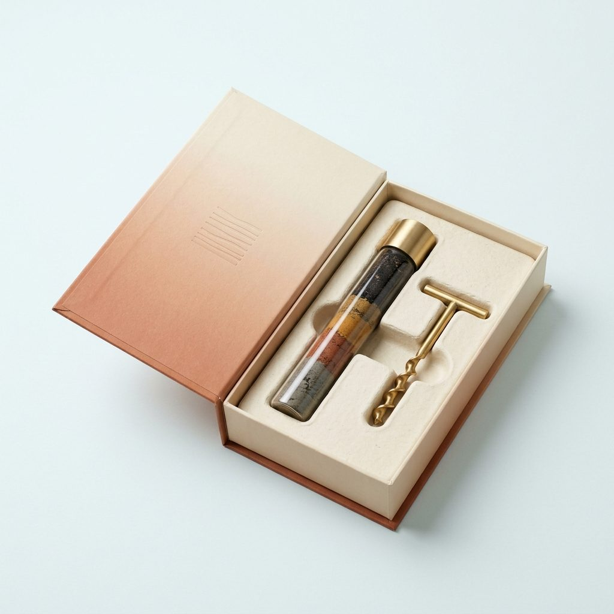
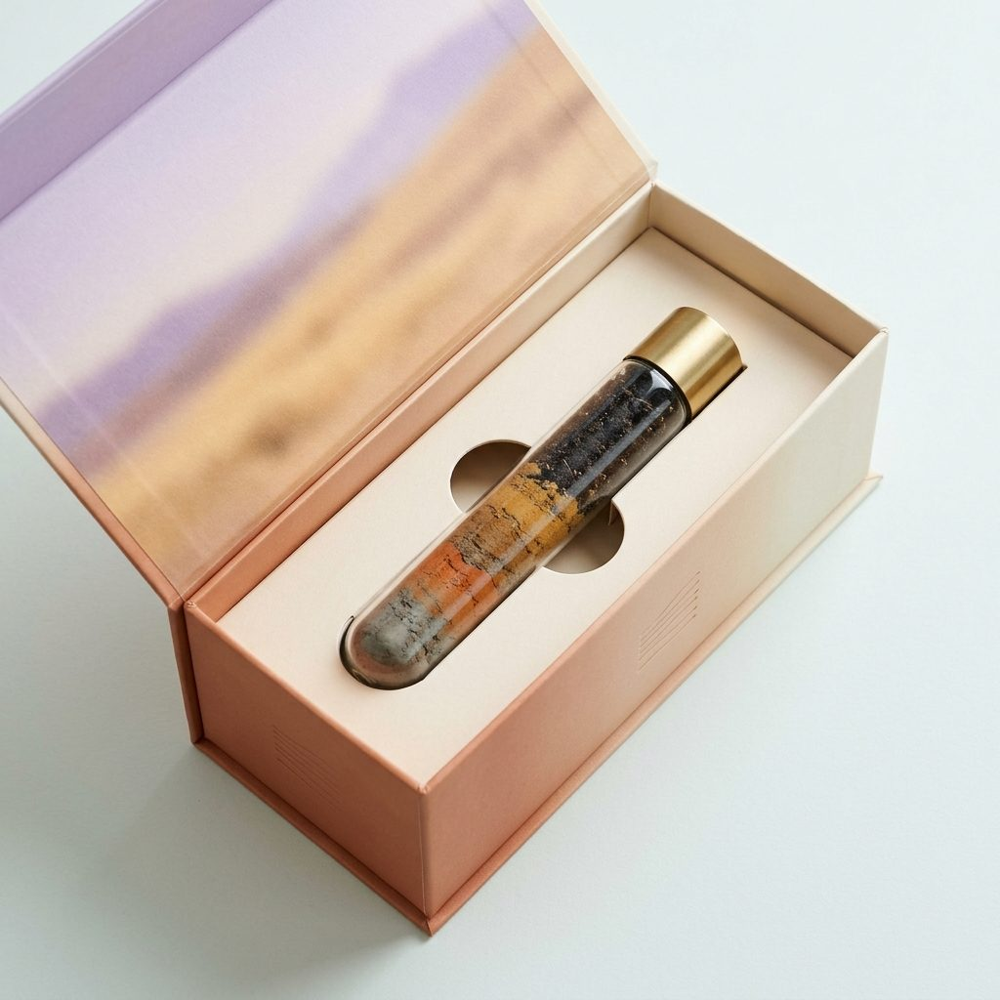
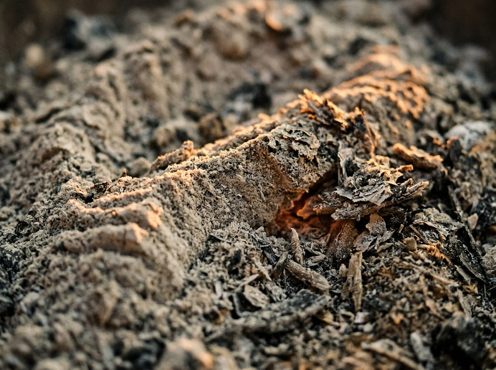
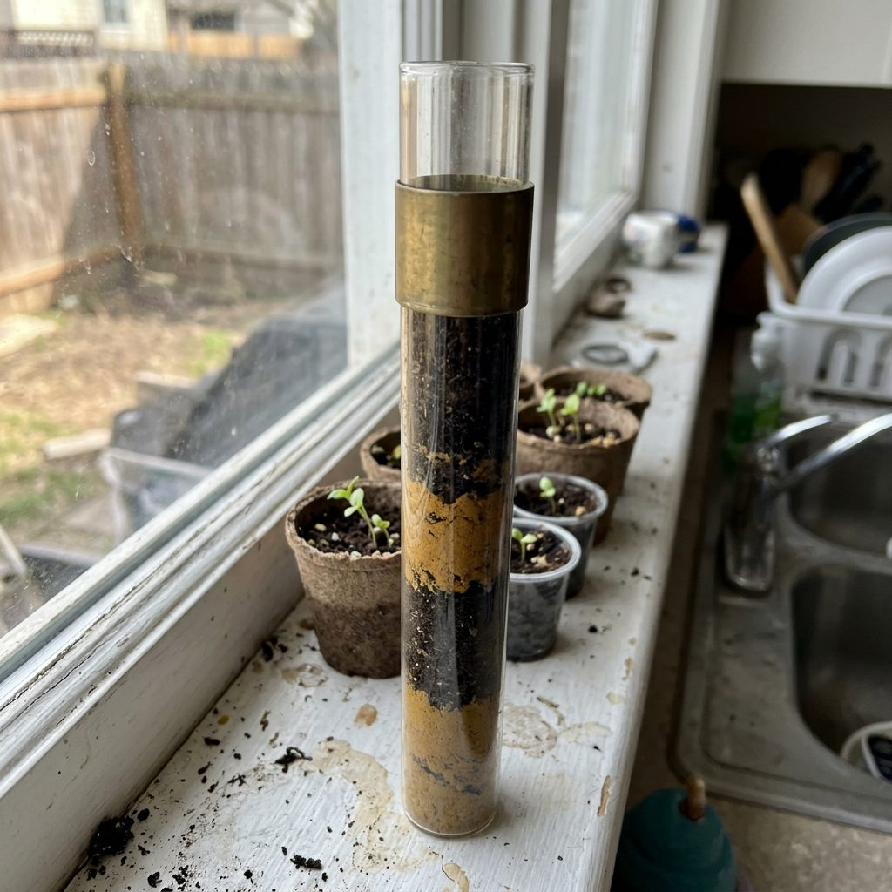
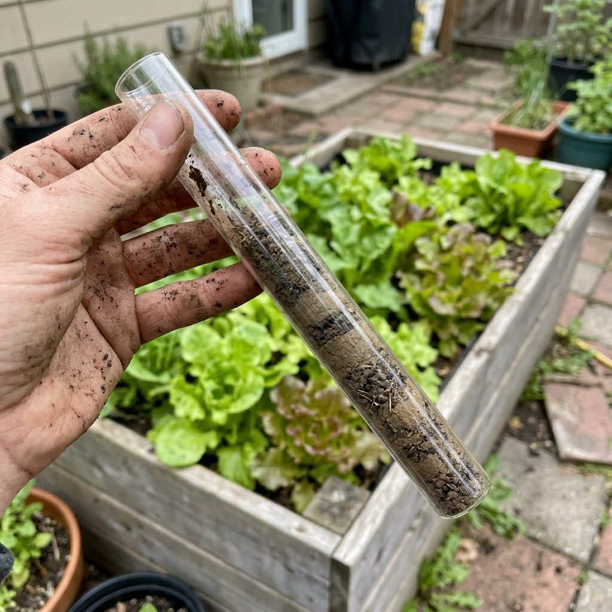

Your collection kit
Brass corer, glass tube, padded pouch, and a small booklet of drawings. Nobody has to visit and nothing has to be booked.



At-home core analysis
One small core of soil, read across 15 markers. See which layers are rich, which are tired, and which still carry something from a previous owner, with plain advice on what to grow, feed, and leave alone.
A new kit at the start of each season, so you can watch your changes work their way down.
"Four cores a year is how I finally learned which of my good ideas were good."
One kit, one core, one report. A good place to start if you have never looked below the surface before.
Kits leave our workshop within two working days and arrive in 3-5 days. Return postage for your core is included. Unused kits can be returned within 30 days.
What one core of soil
has to say.
Fifteen markers, each mapped across 30 seasons.
Old paint, ash pits, and decades of traffic left lead behind in many town gardens. It stays close to where it fell, so a layered reading shows whether you are looking at last year’s dust or a much older chapter.
Carried in by winter grit, softened tap water, and generous feeding, salt is one of the quieter reasons a border sulks. It is worth following across seasons, because a wet winter can wash it out and a dry summer can draw it straight back up.
Rain, conifer needles, and some fertilizers all nudge soil sour over time. Acidity decides which nutrients plants can reach, so knowing when the drift began tells you far more than a single reading on a paper strip.
Found in manure, clover, and almost every bag of feed, nitrogen drives leafy growth and moves quickly with the rain. Your timeline shows whether it has held steady, or arrived in one rush and left just as fast.
Found in wood ash, comfrey, and seaweed, potassium helps plants fruit, flower, and stand up to frost. A layered reading shows how much your soil holds on to between one harvest and the next.
Found in chalk, lime, and crushed shell, calcium builds strong cell walls and helps clay crumble rather than clod. Your results show whether old liming still has any effect on the layers your roots are using.
Humus is the dark, spongy remainder of everything that ever lived in your ground. It holds water, feeds roots, and steadies temperature, and it is the best single sign of how a bed has been treated over the years.





Old paint, ash pits, and decades of traffic left lead behind in many town gardens. It stays close to where it fell, so a layered reading shows whether you are looking at last year’s dust or a much older chapter.
Carried in by winter grit, softened tap water, and generous feeding, salt is one of the quieter reasons a border sulks. It is worth following across seasons, because a wet winter can wash it out and a dry summer can draw it straight back up.
Rain, conifer needles, and some fertilizers all nudge soil sour over time. Acidity decides which nutrients plants can reach, so knowing when the drift began tells you far more than a single reading on a paper strip.
Found in manure, clover, and almost every bag of feed, nitrogen drives leafy growth and moves quickly with the rain. Your timeline shows whether it has held steady, or arrived in one rush and left just as fast.
Found in wood ash, comfrey, and seaweed, potassium helps plants fruit, flower, and stand up to frost. A layered reading shows how much your soil holds on to between one harvest and the next.
Found in chalk, lime, and crushed shell, calcium builds strong cell walls and helps clay crumble rather than clod. Your results show whether old liming still has any effect on the layers your roots are using.
Humus is the dark, spongy remainder of everything that ever lived in your ground. It holds water, feeds roots, and steadies temperature, and it is the best single sign of how a bed has been treated over the years.
Drives leaf and stem. Found in manure, clover, coffee grounds and most feeds.
Supports roots and early growth. Found in bone meal, compost and poultry manure.
Helps fruit, flower and frost hardiness. Found in wood ash, comfrey and seaweed.
Builds cell walls and crumb structure. Found in chalk, lime and eggshell.
The heart of every green leaf. Found in dolomite, Epsom salts and some clays.
Needed for flavor and protein. Once delivered by coal smoke, now often scarce.
The dark, spongy remains of life that hold water and food in the topsoil.
Left by road grit, softened water and heavy feeding. Pulls moisture away from roots.
Pressure from boots, barrows and building work that closes the air spaces roots need.
Drift in pH from rain, conifer litter and certain fertilizers that locks nutrients away.
Traces of past sprays and weedkillers, including those carried in with hay or manure.
A legacy of old paint, traffic and ash in older towns and gardens.
Fragments from mulch film, mesh, plant pots and shop-bought compost.
Fungal threads that carry water and minerals to roots. Broken by heavy digging.
How each layer has held and released water through wet and dry seasons.
One kit. Three things that stay with you.
You post one tube. The rest of this arrives in your letterbox or your inbox.
Brass corer, glass tube, padded pouch, and a small booklet of drawings. Nobody has to visit and nothing has to be booked.
Your Ground Score, fifteen markers, and a strip of thirty seasons, set out in a five-page report.
A one-page list of jobs, in order, for hand tools and ordinary weekends. Each one names the layer it is meant to help.
One narrow core.
The whole story.
Push, twist, lift. One clean core, before the kettle has boiled.
Seal the tube, slip it into the pouch, and post it. Return delivery is included.
Fifteen markers are read in place, one centimeter at a time.
Thirty thin layers become one long, readable strip.
A short list of next steps, written for hand tools and ordinary weekends.
Push, twist, lift. One clean core, before the kettle has boiled.
Seal the tube, slip it into the pouch, and post it. Return delivery is included.
Fifteen markers are read in place, one centimeter at a time.
Thirty thin layers become one long, readable strip.
A short list of next steps, written for hand tools and ordinary weekends.
Your garden’s own diary, in plain words.
Your Fallow report turns a small core of soil into a 30-season picture of your ground. Most people read it standing up, at the kitchen counter, in about ten minutes.
why it matters
One figure for the whole bed. Feeders push it up, stressors pull it down, and neither has anything to do with how hard you have worked.
why it matters
Is 40 a lot? It depends on everyone else. Each marker is placed on a scale drawn from thousands of other garden cores.
why it matters
Run a finger along the strip and stop where it jumps. That might be the year of the patio, the summer it never rained, or the month the hedge came out.
why it matters
Anything unusual gets a paragraph: where it probably came from, and the smallest useful job you could do about it.
Most soil tests stop at today.
Fallow keeps going down.
Collect at home, no digging needed
When the pattern changed
Season-by-season timeline
Written for gardeners, not chemists
To match one core with scoops alone, you would have had to start sampling thirty years ago and never skip a spring.
Eleven years of hedges, orchards, and other people’s back gardens.
Dr Maren Adeyo
CEO & Founder
Dr Adeyo learned to read soil beneath old hedges, where nobody had dug for a century. Fallow brings the same patience to ordinary back gardens.

Discover how a single core of soil becomes a 30-season map of your garden.
Answered by
Dr Maren Adeyo
5.0 Based on 8 reviews
100%would recommend this product


Rating
I recommend this product
I loved how readable it was. I have no science background and could still see exactly when the previous owners stopped looking after the beds. The layer chart is beautiful and the advice fits on one page. I will be testing the front garden next.
I recommend this product
My beans have failed in one corner since we moved in. Turns out there is a band of old residue 12 cm down. We grow flowers there now. Easy to use and quick to come back.
I recommend this product
I expected to skim it and ended up reading every page aloud to my sister. My favourite finding was the sulfur line. You can see it stop almost overnight. I also learned that I have been over-liming for years, which explains the blueberries.
I recommend this product
We garden on the site of a former coach works and I wanted to know what we were kneeling in. Clear answers, calm tone, sensible suggestions.
I recommend this product
It helped us work out where to put the raised beds and where to leave the grass alone. Highly recommended.
I recommend this product
The corer alone is a joy to use. The report told me my soil is thirstier at 20 cm than at the surface, which changed how I water.
I recommend this product
We pooled together and tested six plots. Comparing them made the best meeting we have had in years.
I recommend this product
No scare tactics. Just what is there, when it arrived, and what to do on Saturday.
A 30-season map of your ground, plus practical guidance for every bed you care for.
Order your testFallow is a soil assessment for home gardens and small plots. We read fifteen markers from one core and set them beside readings from other gardens, so that people can learn how their ground has changed. Nothing in a Fallow report is a land survey, a contamination clearance, or a certificate of any kind. Where the law asks for a qualified surveyor, please use one.
See what the seasons left behind. Get 10% off your first test when you join our list.